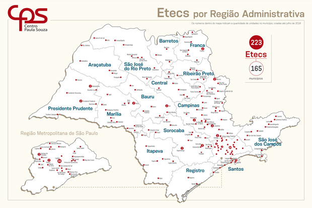

Localização das ETECs

Metropolitana de São Paulo
• ETEC Abdias do Nascimento (Paraisópolis)
• ETEC Albert Einstein (Casa Verde)
• ETEC de Guaianazes (Guanaiazes)
• ETEC Guaracy Silveira (Pinheiros)
• ETEC de Heliópolis (Heliópolis)
• ETEC de Itaquera (Cohab 2)
• ETEC de Itaquera II (Itaquera)
• ETEC Jardim Ângela (Jardim Ângela)
• ETEC Jornalista Roberto Marinho (Brooklin)